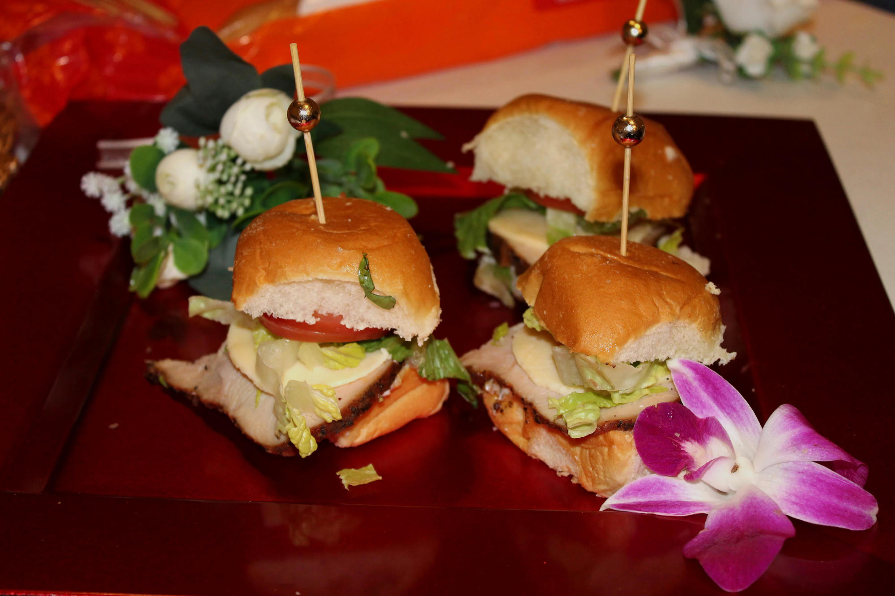

Photos
Real tables.
Real parties.
Every photo here was taken at an event I catered. Click one to see it larger.



Your table will follow the menu you pick, not a photo. Tell me which one you like and we'll talk about it.
Menus and prices ↗